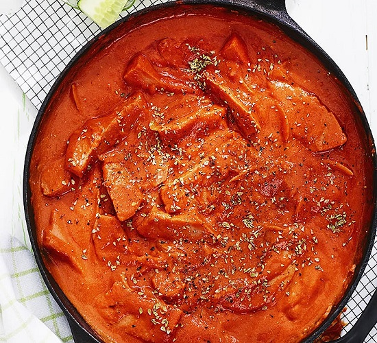

Sausage Stroganoff

Quick-cooked Sausage Stroganoff
Sausage stroganoff is a classic home cooking when it is at its best. Especially when it's quick to make like
this! Shred the sausage, slice the onion and fry in a little oil. Lower the heat and add tomatoes, tomato puree,
oregano, paprika powder, crème fraiche and crumbled bouillon cubes and simmer for about 5 minutes. Ready in no
time!
Ingredients for 4 Portions
- 1 Onion
- 550g Sausage
- 500g Tomato Passata
- 1tsp Oil
- 2tbs Tomato Puré
- 1tsp Oregano
- 1tbs Paprika Powder
- 1dl Créme Fraiche
- 1 cube of Beef Stock
- 4 portions of Rice
Cooking Instructions
- Peel and slice the onion. Shred the sausage.
- Fry sausage and onion in the oil until it gets a little color. Lower the heat, stir in the tomatoes, tomato
puree, spices, crème fraiche and crumbled bouillon cubes. Let simmer for about 5 minutes.
- Boil the rice according to the instructions on the package.
- Serve the sausage stroganoff with the rice
Back to homepage